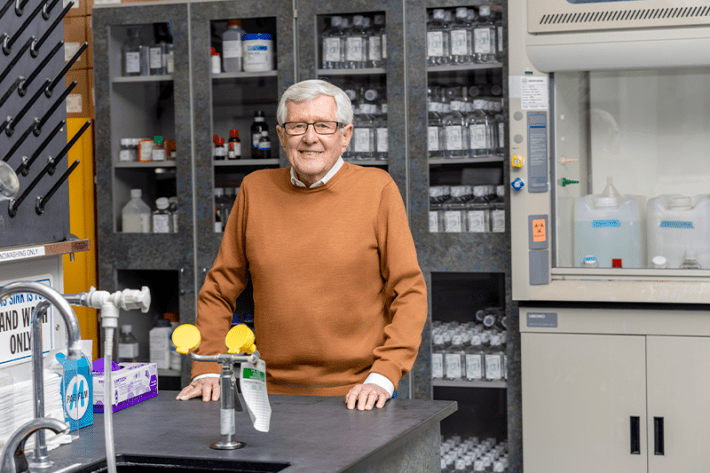
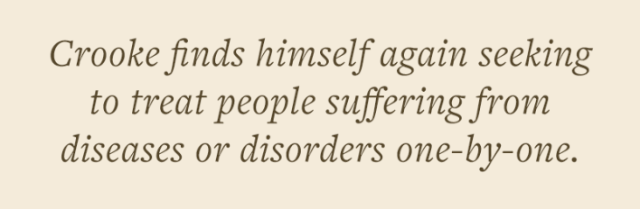
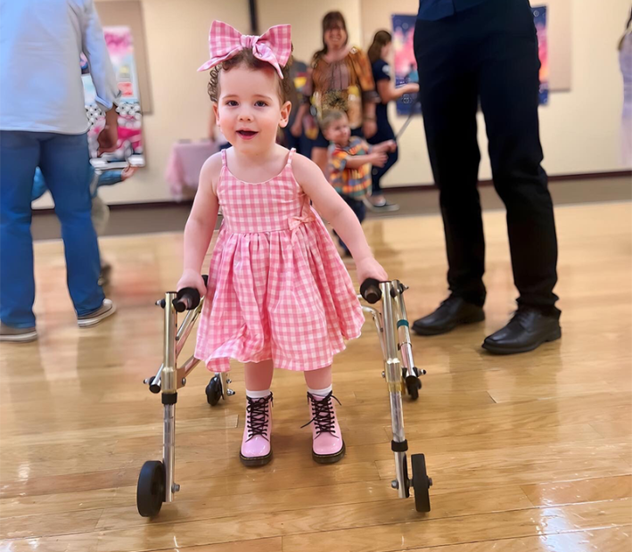
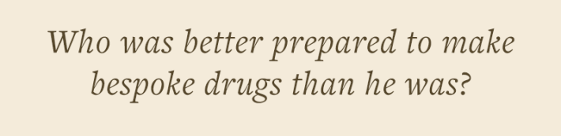

The first time Stan Crooke helped treat a terminal cancer patient was in 1969—or maybe 1970. The 81-year-old physician and pioneering drug designer can’t quite remember the year. He has, after all, worked with many patients with seemingly incurable diseases over his long career. But in this case, he certainly remembers the feel of it.
Crooke was a third-year student at Baylor College of Medicine at the time, his Ph.D. already behind him, and a young man had been referred to the hematology-oncology unit with an abdominal mass.
It turned out to be disseminated testicular cancer. The patient was maybe 25—around the same age as Crooke himself then—and a college grad engaged to be married. Crooke was in the room when the patient received the news, and seeing “the process of telling him that he was going to be dead in six months was impactful for me,” he says. The interaction showed Crooke that a physician would sometimes be in “the most responsible position a human being could be in,” he adds, face to face with a patient who has “put his life in your hands.”
He could have had a career filled with those moments. He had a classmate who talked about setting up a rural practice somewhere, out in the country’s plains, or maybe a foothill community, and he wanted Crooke to join him. But that wouldn’t work. For years, Crooke’s wife Nancy had been plagued by a mysterious vasculitis, an autoimmune disease of the arteries that physicians couldn’t get a handle on. And they had a young son with a learning disability, who would probably require private schools. Crooke needed a guaranteed, sizable income, more than what a country doctor would make.
Read more: “Saving the Girl with Dementia”
But another important thing had happened in that room with the young cancer patient: The medical team had offered to try an experimental drug called bleomycin. Crooke had never heard of it, and when he looked it up, he saw it was a natural product discovered in Japan, not yet approved for clinical use in the United States. It had “a structure that I’d never seen, a mechanism of action that was completely unknown” and a “bizarre toxicity,” he recalls.
Returning to his Baylor lab, Crooke began investigating bleomycin, and he realized something else about medicine: The impact he might exert from “making one good drug” could exceed any good he could do as a physician. He was nearing the end of his M.D.-Ph.D. program, so he called Bristol Labs, the company that had the rights to bleomycin in the U.S., asked for a job, and got hired as a clinician.
It put Crooke on a career roller coaster, and for decades he fought through—and sometimes with—the drug development world. He would spearhead the effort to introduce a new type of drug therapy into the pharmaceutical arsenal, but the patient was never far from his mind. Now, after more than eight decades on the planet, Crooke finds himself again seeking to treat people suffering from diseases or disorders one-by-one.

STAN-OF-ONE: Stan Crooke in a laboratory at n-Lorem. Image courtesy of the n-Lorem Foundation.
If you had known Crooke as a boy, it would have been difficult to predict the arc of his life. He was born to a teenage mother in 1945. He didn’t know who his father was growing up, and still doesn’t. For the first years of his life, he was raised by his grandmother and great-grandmother, sharing space with a couple of cousins in a shotgun house in downtown Indianapolis.
Eventually his mother married a man, and she moved Crooke into their home. She had two more children, a boy and a girl. Their neighborhood was decidedly blue collar, filled with laborers, machinists, and mechanics. His mother was “easily annoyed and volatile” Crooke says, and she was addicted to amphetamines (diet pills) and barbiturates, introduced to her by her doctor. Plus, she had rheumatoid arthritis and took a lot of cortisone.
After such an inauspicious start, Crooke managed to lift himself out of that life with raw intelligence and a furious work ethic: He had a pre-dawn, bicycle paper route before he was 10; he held an after-school job in a corner drugstore; and he worked in a pharmacy, all before graduating high school. The money he brought in went to help support the family.
In 1960 he was accepted into Purdue University’s aeronautical engineering program for college—he’d applied simply because he liked airplanes—but he struggled. And in his second year he withdrew. Back in Indianapolis, Crooke enrolled in a pharmacology program at Butler University and married his childhood sweetheart, Nancy. After he’d completed the requirements for a master’s degree in pharmacology, that might have been that—a life spent running a drugstore right there in Indianapolis.
But Crooke wasn’t quite done with higher education, and he applied to a handful of medical schools. And when he enrolled in Baylor’s M.D.-Ph.D. program, he was exposed to “true science” for the first time, he says. The experience reshaped his world.
The seminal papers in so-called “antisense technology” were two studies by the same authors published in the Proceedings of the Academy of Sciences in 1978. Those papers reported that a short, single-stranded piece of synthetic DNA, when delivered into stem cells taken from chicken embryos, was able to inhibit the replication of a virus infecting that embryo. The piece of DNA—called an oligonucleotide—bonded to the “sense” strand of messenger RNA in the cells, rendering it unable to produce a protein critical to virus replication. The term “antisense” itself arose from the bonding to this “sense” strand, and the paper suggested that antisense oligonucleotides, or ASOs, might be able to influence protein production elsewhere in the body. That ability had all kinds of tantalizing possibilities for medicine.
Crooke learned about antisense around 1987, when a speaker at a symposium hosted by the pharmaceutical company SmithKline presented his own work in the young field. By then Crooke had left Bristol, was worldwide president of R&D at Philadelphia-based SmithKline, while also running a lab at the University of Pennsylvania. After the talk he dug up those original antisense papers.

It was fortuitous timing, because Crooke was at something of a crossroads. Nancy had died of her illness in 1984, leaving Crooke a widower and a single father. He had begun to rebuild his life, in particular by marrying a researcher named Rosanne Snyder, a former grad student at his UPenn lab. But he’d grown unhappy in his career. The pace of innovation at a big pharma company was frustratingly slow, he felt, and SmithKline’s shares had been underperforming.
It seemed like the company might be bought, and Crooke was dead set against that. He was “very aggressive” about saying so, he recalls, a stance that left him with few friends in senior management, and he admits that he “should have been a better subordinate.” But also, he thought the drug development world needed a new way to make medicine, and he wanted to investigate antisense on his own terms. After all, he had that pharmacology degree in his background, his M.D. training, all his research work, and now he had spent years actually making drugs. Something told him he was exactly the right person to develop antisense as a drug platform.
So when SmithKline fired him in 1988, he was already halfway to forming a biotech startup. He rounded up a core of talented researchers, including Rosanne, and launched an antisense company in January 1989 on the other side of the country, in Carlsbad, California.
That company would eventually be called Ionis Pharmaceuticals. And for more than 30 years Crooke ran it with the overarching goal of perfecting antisense as a therapeutic platform. The company won milestones—approval of the first antisense drug (for a sight-threatening, viral inflammation of the retina called CMV retinitis), and then one for homozygous familial hypercholesterolemia, a rare, congenital high-cholesterol disorder. But those drugs were eventually discontinued for lack of use, and the company’s reputation was also marred by two high-profile failures in clinical trials. Mostly during this time, Crooke fed a rapacious R&D arm that burned through money, and by the end of 2015, Ionis had a net loss of $1.1 billion.
But near the end of 2016, Ionis won approval for an antisense drug that Crooke called a “piece of magic.” Marketed as Spinraza, it treats spinal muscular atrophy (SMA), a disease caused by a mutation in the survival motor neuron 1 gene, or SMN1. When defective, the gene does not produce enough of the SMN protein, this lack of protein causing neurodegeneration, particularly in skeletal muscles of the trunk. In the most severe cases, SMA leads to death before a child turns 2.

N-OF-HARLOW: Harlow is a 5-year-old girl living with a neurodegenerative disorder caused by a nano-rare mutation in her TUBB4A gene, which encodes a protein essential for cellular structures called microtubules. She first received an antisense oligonucleotide discovered and developed at n-Lorem in October 2025. Image courtesy of the n-Lorem Foundation.
There is a backup copy of the gene, SMN2, but the gene produces just low levels of SMN protein. Spinraza, which was created in collaboration with the biotech company Biogen, boosts the production of a full-length, functional SMN protein. The drug immediately began extending children’s lives, and by the end of 2025, Spinraza had been approved in more than 70 countries and administered to more than 14,000 people.
Spinraza seemed almost like divine intervention to the SMA community, which had never had even a single therapy to treat the disease, partially because the mutation behind SMA wasn’t known until 1999. But the drug to target that mutation was the culmination of 25 years of work by Ionis to make RNA stable in the body, and deliverable to the desired tissue without toxicity. “And all of those questions took decades to work out,” says Eric Green, CEO of Trace Neuroscience, a company developing an ASO for Lou Gehrig's disease. And the work was mostly “done by Ionis, and largely led by Stan Crooke.”
Once Spinraza showed benefit in patients, Green adds, observers realized that if antisense worked for “spinal muscular atrophy, you can take that same backbone, redesign it based on the specific sequence that you want to target in a new gene, and you are well on your way.”
Crooke fully stepped away from Ionis midway through 2021, at age 76. But similar to when he'd left SmithKline, he had an exit plan. Sometime around 2018, Crooke estimates, a man and a woman came to see him, each with a son who had a mutation in a gene called SCN2A that is essential for brain cell communication. The boys were "desperately ill,” Crooke remembers, and the parents wanted to know if Ionis could build an antisense drug that would target their children’s defective gene.
Crooke explained that it was not financially viable to make and sell a drug for just one person. This was a hole in the capitalist drug development process: Pharmaceutical companies will tell you that it takes 10 to 15 years and $2.6 billion to create a new therapy, when you consider the sunk cost of failed drugs. To make a drug for a single patient in that system would never be financially viable.
But Crooke knew that antisense technology had become “efficient enough that I could probably make them an ASO and give it to them,” he says. And once he realized that, he felt a “moral imperative” to try.
Still, there were three things that gave him pause. The first was whether the U.S. Food and Drug Administration would allow him to run “N-of-1” clinical trials—studies of a drug in just a single patient. But when he approached the regulatory authority, he found “fertile ground,” he recalls: Others were already asking the FDA about this, including a researcher named Tim Yu, from Boston Children’s Hospital. It helped that Crooke had been dealing with the FDA himself for some 30 years, and the regulators realized that the team at Ionis, some of whom had also been working there for decades, “understood antisense,” Crooke says.
Then there was money. Crooke planned to give the antisense oligonucleotides away, so he needed to establish a non-profit, and that meant sizable fundraising. But he’d been “through that before” as CEO of Ionis, he says.
The third thing had to do with Crooke himself. Somewhere around turning 75, he realized that he actually felt tired at the end of a work day. That had never happened before. For his entire life he’d worked like a man on fire, but “anyone my age,” he says, “has to recognize that time’s running out.”
These were minor concerns, though, when compared to the exhilarating challenge of developing bespoke drugs for patients. The truth was, he’d fallen in love with antisense technology when he’d first heard of it back at SmithKline, and that passion had never dimmed. It might have been hubris, but when he’d launched Ionis back in 1989, he’d felt he “was exactly the right person to do it,” he says. “I had the right training, the right mental makeup, the right focus.” That feeling, too, had never dissipated. After more than three decades chasing antisense, he thought, who was better prepared to make bespoke drugs than he was?
N-Lorem opened its doors in 2020. The response was overwhelming. Stan expected about five applicants that year, but the non-profit received 53 requests to create ASOs for patients—nearly all of them children—with “nano-rare” genetic mutations, meaning they affect only 1 to 30 people globally. The next year applications jumped to 64, and by the end of 2025, n-Lorem had received more than 400 applications, and had decided it could create ASOs to target 216 of those nano-rare mutations.
The first patient dosed wasa girl named Susannah. Her parents, Luke Rosen and Sally Jackson, realized something was wrong when Susannah—1-and-a-half at the time—stopped being able to kick her legs in the bath. A full genetic screening revealed a mutation in the girl’s KIF1A gene, which codes for a molecular motor protein essential to normal neuronal function. They made an appointment with Wendy Chung, the Kennedy Professor of Pediatrics in Medicine and the Director of the Division of Clinical Genetics at Columbia at the time, who told them Susannah had a rare neurodegenerative condition that shared characteristics with SMA or the similar Huntington’s disease. Chung added that there was no cure, but suggested contacting people working on drugs for those conditions.
Rosen came across Ionis. He visited the company, and Crooke, again, had to explain that making a drug for one person wasn’t financially viable. Chung knew the team at Ionis through her own work, and when n-Lorem launched, she assured Rosen that the people there “knew what they were doing.” She and Rosen and Jackson put in an application to work with the non-profit, and Chung eventually heard that Susannah’s genetic mutation had been accepted by n-Lorem for investigation. “And so we started on that journey,” Chung recalls.
Read more: “Bring Us Your Genes”
Susannah was first dosed in November 2022, and by that time she was having between 100 and 290 “behavioral arrests” per day—moments of unresponsive staring, sometimes accompanied by eye rolling, leaning to the side, and falling. The n-Lorem team slowly increased her dose, and when it had reached 80 mg, Susannah’s behavioral arrests had dropped to 30 per week. She fell down less, and her speech improved, as did her quality-of-life score.
Sussanah has now been treated for more than three years. She can stand, she can walk with assistance, and her vision has improved. And because she is what n-Lorem calls a “pioneer patient,” every metric she generates helps inform not only how to treat others with mutations in their KIF1A genes, but how to treat patients with ultra-rare diseases in general.
To date, n-Lorem has dosed more than 50 patients with a variety of nano-rare mutations, easily more than any other organization. The cost of this is significant; n-Lorem’s spend in 2024 was nearly $16 million. Stan and Rosanne started n-Lorem by putting in $10 million of their own money, and Ionis and Biogen were both founding donors. These days the foundation is funded in three nearly equal ways: charitable giving from high-wealth individuals and donations from pharmaceutical companies (Biogen continues to donate); business deals, in which n-Lorem provides research services for payment; and directed giving in the form of grants or support for particular patient programs.
With this money, n-Lorem creates bespoke ASOs and supplies them to patients for free, for life. The foundation will also provide small funding for the institution hosting the patient, but generally the costs of administering the drug at a hospital, and monitoring the patient, are borne by the family. They can try to use their health insurance, but because the ASO is experimental, “insurance doesn’t have to pay one iota” for covering the administration expenses if they choose not to, says Chung.
This has created a “complicated situation,” Chung says. “How much are families filling the gap when things aren't covered? I don't know.”

Yet n-Lorem was not the first to make a bespoke ASO. That was done in the lab of Tim Yu, at Boston Children’s Hospital, who created an ASO for a girl named Mila. She had a variant of a severe seizure disorder called Batten disease, caused by a mutation in her CLN7 gene. Yu received guidance from Ionis members and hislab created an ASO with the same backbone and sugar chemistry modifications as Spinraza, but targeting Mila’s specific mutation.
They called the drug Milasen, and Mila got her first dose in early 2018. In the clinical trial, the amount of time her body spent in seizure dropped by more than 80 percent—but her disease might have been too far advanced by the time treatment started, and she died in February 2021, at age 10.
With his team at Boston Children’s, Yu went on to make ASOs for two other girls—both 3 years old at the start of treatment—who had mutations in their KCNT1 genes, which help regulate neuronal function in the brain. But both suffered swelling in the brain after treatment. (The first child was withdrawn from the trial and died three months after her final ASO dose. The second child was removed from the study and treated for her brain swelling; two years later, she resumed treatment, and her seizures have reduced 66 percent to date.)
Similar instances of brain swelling, called hydrocephalus, have also occurred in Spinraza patients and in one trial of an ASO to treat Huntington’s disease, but so far at n-Lorem the safety record has been mostly clean. Only Susannah has had an ASO-related safety event. Near the end of 2025, she had a fever after dosing, and the team at n-Lorem worried “she might have inflammation in her central nervous system,” Crooke says. They monitored her cerebral spinal fluid pressure until, in early 2026, it fell low enough for her to resume treatment.
Even with the hydrocephalus cases, drug regulators are considering the benefits of bespoke drugs designed for individual patients. In late 2025, the United Kingdom’s version of the FDA, the Medicines and Healthcare products Regulatory Agency, said it was hoping to consider “a single marketing authorisation” pathway for therapies with a variable component tailored to an individual’s characteristics. And the FDA in December 2025 gave guidance for a Plausible Mechanism Framework, laying out an avenue for bespoke therapies to be cleared for commercial use. Approved drugs bring insurance companies to the table.
When Crooke heard rumors of the coming Plausible Mechanism Framework guidance from the FDA, he worried that whatever the FDA put forth would be “misguided.”
He was wrong about that, he says. The draft guidance suggests that regulators will consider a pathway to approval for therapies that show a direct link between a defective gene and disease, for instance, and when the therapy has been confirmed to affect the underlying target. Drugmakers could also use the natural history of the disease in untreated patients as a baseline for improvement, given there would be no large-scale clinical trial. The FDA received public comments on the draft until April 27.
In addition to calling the Plausible Mechanism Framework an important step, Crooke says he thinks that n-Lorem’s growth and safety record has something to do with the FDA’s willingness to consider an approval pathway for bespoke drugs. “I certainly want to believe that. And we've treated more nano-rare patients successfully than all the other organizations' dreams combined,” he says.
The n-Lorem patients are often unblinded, and the whole team knows exactly who they are making drugs for. This intimacy wasn’t something that Crooke considered before starting n-Lorem, but once he was at the helm, he realized his life, in a way, had circled back around to practicing medicine. Running the foundation has felt “very much more like seeing patients again,” he says.
Amy Williford has worked for Crooke twice now—first in investor relations at Ionis and now as vice president of foundation development and external relations at n-Lorem. She has seen him as CEO of a for-profit biotech, and now, in his supposed retirement, she’s watched him grow n-Lorem. She knows the hardships Crooke endured in his youth and reckons that he carried “a lot of anger at the injustice of the world” that may have showed up in his earlier management style. But now he’s a “kinder, gentler” version of himself, she says, and not as “terrifying” to the scientists who present their work in front of him.
It’s possible that the time Crooke spent babysitting his younger half brother and sister acclimated him to caring, and that’s why he likes treating patients. Or maybe being a breadwinner as a boy in his family made him feel responsible for others. Or maybe he was just born an empathetic, caring person. It’s one of the great questions of science: nature vs nurture. But Crooke is not particularly interested in interrogating it.
“I don't know exactly why I am the way I am,” he tells me. “But I do know that I want to be in control. And I like being responsible. And when I had the chance to take care of a patient, I changed. And, it was meaningful to me to be responsible for another person.” 
Lead image: master1305 / Adobe Stock